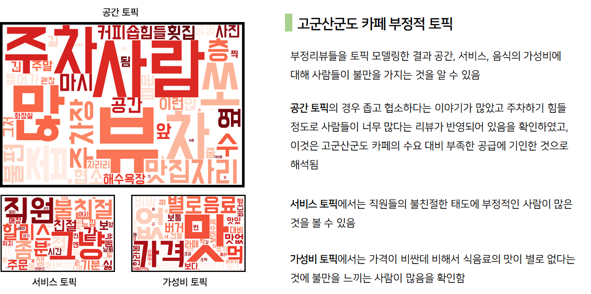
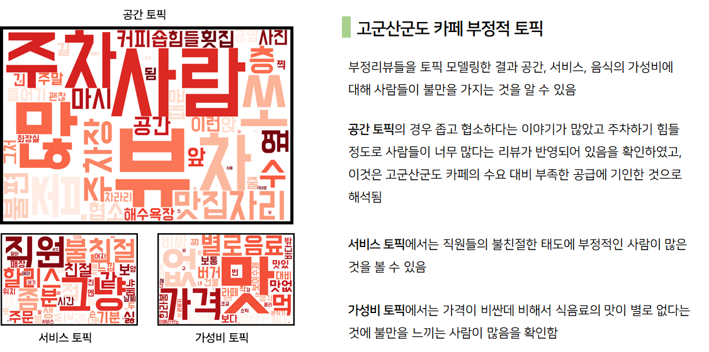

군산 관광 허브
군산 관광 허브가 필요한 이유
1. 군산의 관광지 군집화 현상 해소
SKT 유동인구 데이터를 활용해 군산의 주요 지역 세곳인 옥도면,
월명동, 경암동의 주말 유동인구를 분석한 그래프입니다.
결과를 살펴보면, 군산 방문객이 가장 많이 찾는 곳인
고군산군도(옥도면)을 찾는 방문객은 주로 중년 남성 층이며,
철길마을과 시간여행 마을이 위치한 경암동, 월명동의 방문객들은 상대적으로
젊은층, 여성층동이 많은 것을 확인할 수 있습니다.
이는 일종의 성/연령별 관광지 군집화 현상으로
볼 수 있으며, 두 관광지의 거리 또한 이동을 제약하여 현상을 강화하는 것으로 보입니다.
따라서 관광 중간 거점에 카페거리와 식당거리 그리고 다양한 볼거리가 조성된다면, 군산 시내의 젊은 층들을 유인할 수 있고 수산시장을 들린 그들을 고군산 군도 방문으로까지 이어주는 역할을 해줄 것입니다.
따라서 관광 중간 거점에 카페거리와 식당거리 그리고 다양한 볼거리가 조성된다면, 군산 시내의 젊은 층들을 유인할 수 있고 수산시장을 들린 그들을 고군산 군도 방문으로까지 이어주는 역할을 해줄 것입니다.
2. 고군산군도의 지연된 식음료 수요 흡수
 

고군산군도의 카페의 수요와 공급을 다양한 시각에서 접근해본 결과,
수요에 비해 공급이 부족하며 그러한 결과는 소비자들의 직접적인 리뷰를 분석했을 때도 도출해낼 수 있었습니다.
따라서 고군산군도를 방문한 많은 관광객들에게는 고군산군도에서 소비하지 못했던 식음료에 대한
지연된 수요를 소화할 수 있는 좋은 해법이 필요합니다.
군산관광허브는 고군산 군도로 들어가는 내륙의 입구에 위치해있어 고군산군도에서 내륙으로 들어올때 반드시 거치게 되는 장소이며 두 지역 사이를 오갈 때 걸리는 시간도 약 30분 내외로 관광객들에게 크게 부담스럽지 않은 거리입니다. 또한 고군산군도와 마찬가지로 바로 앞에 바다가 위치하고 있어 좋은 경치를 원하는 소비자들을 만족시켜줄 수 있습니다. 이러한 점들을 고려했을 때 군산 관광허브는 소비자들의 지연된 식음료 소비 욕구를 충족시키기에 적합한 장소입니다.
군산관광허브는 고군산 군도로 들어가는 내륙의 입구에 위치해있어 고군산군도에서 내륙으로 들어올때 반드시 거치게 되는 장소이며 두 지역 사이를 오갈 때 걸리는 시간도 약 30분 내외로 관광객들에게 크게 부담스럽지 않은 거리입니다. 또한 고군산군도와 마찬가지로 바로 앞에 바다가 위치하고 있어 좋은 경치를 원하는 소비자들을 만족시켜줄 수 있습니다. 이러한 점들을 고려했을 때 군산 관광허브는 소비자들의 지연된 식음료 소비 욕구를 충족시키기에 적합한 장소입니다.